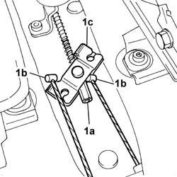
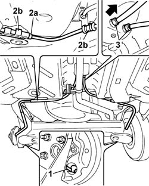

3380A30 handbrake cable - r+r
- Path
- Procedures > 33 BRAKING SYSTEM > 3380 HANDBRAKE > 3380A handbrake control and linkage > 3380A30 handbrake cable - r+r
- Kind
- repair procedure (removal / refitting; the operation number is the code)
- Applies to
- all engines; all production periods
- Interactive page
- https://sloeber94.github.io/elrnDB-fPnd/en/#/2752773
Applies to: all engines; all production periods
 Removing
Removing
 Refitting
RefittingPlace the vehicle on a lift.
Check that the handbrake is released.
1. Undo the adjustment nut (1a) after slackening the cable tension, then disconnect the cables (1b) from the mounting (1c).

Applies to: all engines; all production periods
Raise the car.
Remove the protective cap.
1. Disconnect both handbrake cables from the rear brake shoes.
2. Release the cables from anchorage collars (2a) and bracket (2b).
3. Release both cables from the body fastenings then remove by withdrawing in the arrowed direction.

Applies to: all engines; all production periods
Refitting
RemovingPosition the handbrake cable and connect it to the rear shoes.
Fit the protective caps.
Take the opposite ends of the cables into the passenger compartment and secure to the body.
Secure the cables to the anchorage collars and bracket.
Lower the vehicle.
Working from inside the car, connect the handbrake cables to the mechanism on the lever.
Tighten the nut to put the cables under slight tension
3380A04 handbrake - check travel
Remove the vehicle from the lift.